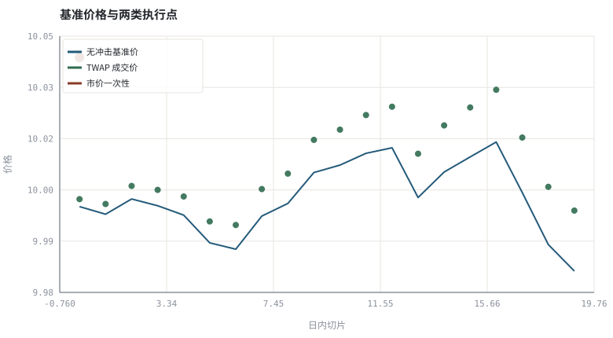
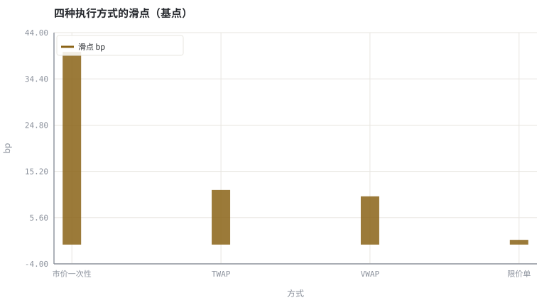

第 29 章订单执行、滑点与市场冲击
信号再好，也要经过「下单」这个有摩擦的物理过程才能变成账户里的钱。
本章位置：第五阶段结束、第六阶段开始：第 26 章 · 事件驱动回测引擎：从信号到成交 的回测里滑点是常数，本章把它变成订单规模的函数；第 30 章 · 仓位、杠杆、VaR/CVaR 与凯利上界 继续把「下多大」写成硬约束。
执行是对一个有限队列做速率限制：一次性提交会触发限流（冲击），分片提交把峰值摊平但拉长延迟（时机风险）。吞吐与时延的权衡，在交易里同样成立。
- 能分解滑点：价差、临时冲击、永久冲击、时机风险。
- 能模拟市价一次性、TWAP、VWAP 与限价单的成交结果。
- 能说明成交量曲线与订单规模如何决定冲击。
- 能把执行成本反馈到策略容量评估。
§知识点地图
每个知识点都配了 1～2 个扩展学习链接；本章完整资源清单见 扩展学习。
| # | 知识点 | 扩展学习 | 状态 |
|---|---|---|---|
| 1 | 到达价与成交均价 | Volume (finance) · OHLC chart | 正文已覆盖 |
| 2 | 买卖价差 | Bid–ask spread · Market microstructure | 正文已覆盖 |
| 3 | 临时与永久冲击 | Market microstructure · Slippage (finance) | 正文已覆盖 |
| 4 | 市场冲击模型 | Market microstructure · Slippage (finance) | 正文已覆盖 |
| 5 | TWAP 与 VWAP | Limit order · Slippage (finance) | 正文已覆盖 |
| 6 | 限价单与成交不确定性 | Limit order · Slippage (finance) | 正文已覆盖 |
| 7 | 拆单与时机风险 | Modern portfolio theory · Value at risk | 正文已覆盖 |
| 8 | 容量评估 | Limit order · Slippage (finance) | 正文已覆盖 |
§29.1执行差额是一个可分解的量
Implementation Shortfall = 成交均价 − 决策到达价 = 价差 + 冲击 + 时机成本 + 机会成本
第 15 章用订单簿算过一次静态冲击；本章加入时间维度：拆得越细，单笔临时冲击越小，但暴露在价格漂移里的时间越长；拆得太快，又会推高永久冲击。这是一道明确的权衡题，不是「越慢越好」。
| 成本 | 来源 | 随什么增大 |
|---|---|---|
| 价差 | 跨买卖档位 | 流动性差、tick 大 |
| 临时冲击 | 短期吃掉深度 | 单笔下单速度 |
| 永久冲击 | 订单被认为含信息 | 累计成交量 / 日均量 |
| 时机/机会成本 | 等待期间价格漂移或未成交 | 执行时长、限价偏离 |
§29.2三种基准算法
- 一次性市价：立即完成，冲击最大、时机风险最小。
- TWAP：按时间等分，实现简单，忽略真实成交量分布。
- VWAP：按历史成交量曲线分配，目标是贴近当日成交量加权均价。
- 限价单：价格受保护，但可能只部分成交，剩余敞口成为机会成本。
§29.3容量：策略能吃下多少钱
若策略日均收益 μ、单次冲击成本 c(Q)，容量大致由 μ × Q > c(Q) 决定。冲击通常随参与率超线性上升，所以提高资金规模会降低单位资金的净收益。报告策略时应同时给出净值曲线与容量估计，否则高夏普没有可执行含义。
§Python 分析实例
实验 29-1 · 市价、TWAP、VWAP 与限价单的执行差额
#!/usr/bin/env python3
# -*- coding: utf-8 -*-
"""用 U 形成交量曲线与临时/永久冲击模型，比较四种执行方式的成交均价。
数据为合成数据或模型示意，仅用于教学，不构成投资建议。
"""
from __future__ import annotations
import math
import pathlib
import random
import statistics
import sys
sys.path.insert(0, str(pathlib.Path(__file__).resolve().parents[3] / "tools"))
from chart import Chart, candlestick, heatmap, BLUE, RED, GREEN, AMBER
FIG = pathlib.Path(__file__).resolve().parents[1] / "fig"
FIG.mkdir(exist_ok=True)
random.seed(7)
# ---- 参数区 ----
Q = 100000 # 总订单量（股）
SLICES = 20 # 日内切片数
ARRIVAL = 10.00 # 决策到达价
ETA = 0.002 # 临时冲击系数
PERM = 0.0015 # 永久冲击系数
LIMIT_PX = 10.01 # 限价单价格上限
# ---- 计算与作图 ----
rng = random.Random(7)
base = [ARRIVAL]
for _ in range(SLICES):
base.append(base[-1] * (1 + rng.gauss(0, 0.0008)))
vol_curve = [1.2 - 0.8 * math.sin(math.pi * t / (SLICES - 1)) for t in range(SLICES)]
tot_vol = sum(vol_curve)
vwap_q = [Q * v / tot_vol for v in vol_curve]
twap_q = [Q / SLICES] * SLICES
market_q = [Q] + [0.0] * (SLICES - 1)
def execute(qtys, limit=None):
cum, cost, filled, marks = 0.0, 0.0, 0.0, []
for t, q in enumerate(qtys):
if q <= 0:
marks.append(None)
continue
px = base[t] * (1 + PERM * cum / Q)
temp = ETA * (q / (Q / SLICES))
fill_px = px + temp
if limit is not None and fill_px > limit:
marks.append(None)
continue
cost += q * fill_px
filled += q
cum += q
marks.append(fill_px)
return (cost / filled if filled else 0.0), filled / Q, marks
results = {
"市价一次性": execute(market_q),
"TWAP": execute(twap_q),
"VWAP": execute(vwap_q),
"限价单": execute(twap_q, limit=LIMIT_PX),
}
c = Chart(FIG / "29-execution.svg", "基准价格与两类执行点", xlabel="日内切片", ylabel="价格")
c.line(range(SLICES), base[:SLICES], BLUE, label="无冲击基准价")
marks = results["TWAP"][2]
c.scatter([t for t, m in enumerate(marks) if m], [m for m in marks if m], GREEN,
label="TWAP 成交价", radius=4)
mm = results["市价一次性"][2]
c.scatter([0], [mm[0]], RED, label="市价一次性", radius=6)
print("执行图:", c.save())
names = list(results)
slips = [10000 * (v[0] / ARRIVAL - 1) if v[0] else 0.0 for v in results.values()]
b = Chart(FIG / "29-slippage.svg", "四种执行方式的滑点（基点）", xlabel="方式", ylabel="bp",
xticks=[(i, n) for i, n in enumerate(names)])
b.bars(range(len(names)), slips, AMBER, label="滑点 bp")
print("滑点图:", b.save())
print("到达价=%.3f | 滑点(bp) 市价=%.1f TWAP=%.1f VWAP=%.1f 限价=%.1f | 成交率 限价=%.0f%%" %
(ARRIVAL, *slips, 100 * results["限价单"][1]))操作：把 ETA 调大（流动性更差），观察市价一次性与拆单之间差距扩大；再放宽 LIMIT_PX 看限价单成交率上升。 预期与判读：一次性市价单因临时冲击最大而滑点最高；TWAP/VWAP 通过拆单降低单笔冲击；限价单价格受保护但可能部分成交。滑点与成交率必须一起看。
改参数看趋势：把 Q 翻倍，观察滑点是否线性放大——这正是策略容量的约束来源。 文件位置：part6/29-execution/code/29-execution.py


代码块右上角可一键复制；仓库里的 code/*.py 由 tools/extract_code.py 从这些代码块自动抽取。脚本只用标准库、固定 random.seed(7)，运行后写出 fig/*.svg；批量运行用 ./tools/run_python.sh。
§本章参考资料
按本章知识点挑选的精读资料；更多检索入口见 扩展学习。
Slippage (finance)
百科 · 参考资料下单价格与实际成交价的差
怎么用：成交价与预期价之差https://en.wikipedia.org/wiki/Slippage_(finance)
Market microstructure
百科 · 参考资料价格形成、冲击成本与做市机制
怎么用：冲击成本与价格形成https://en.wikipedia.org/wiki/Market_microstructure
Interactive Brokers
行情 · 参考资料多市场订单类型与保证金账户的界面示例
怎么用：多市场订单类型与执行设置的界面示例https://www.interactivebrokers.com/
§常见误区
- 回测里用收盘价成交，忽略到达价与成交价之差。
- 只比较滑点，不比较成交率与未完成敞口。
- 用当日成交量决定 VWAP 权重，引入未来信息。
- 忽略涨跌停、停牌与最小报价单位对拆单的限制。
§习题与思考
- 推导为什么临时冲击随参与率超线性上升会使容量有限。
- 在示例里把 VWAP 曲线改成单调递增，观察成交均价如何变化。
- 给限价单加入「未成交部分次日补单」，讨论机会成本如何计量。
§扩展学习
以下资料按本章知识点挑选，可直接精读或对照真实数据；知识点地图里每一条也挂了 1～2 个直达链接。
- Limit order（百科）：限价单的成交不确定性与价格保护
Limit order - Slippage (finance)（百科）：下单价格与实际成交价的差
Slippage (finance) - Market microstructure（百科）：价格形成、冲击成本与做市机制
Market microstructure - Interactive Brokers（行情）：多市场订单类型与保证金账户的界面示例
Interactive Brokers - CME Group（机构）：期货与期权合约规格、保证金规则
CME Group
继续扩展：在 Google Scholar 检索本章相关论文 · 在 MIT OCW 检索配套课程 · 在 arXiv 检索预印本 · 全书参考资源总表 · 附录 A 速查与链接总表
§延伸阅读与内链
- 第 30 章 · 仓位、杠杆、VaR/CVaR 与凯利上界 仓位与杠杆约束；第 15 章 · 盘口、分时与逐笔：价格是怎样形成的 订单簿深度；第 04 章 · 交易所制度：竞价、涨跌停、T+1 与交收 制度限制。